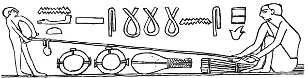

這人便爲有福

不從惡人的計謀，不站罪人的道路，不坐褻慢人的座位，惟喜愛耶和華的律法，晝夜思想，這人便為有福！（詩篇 1:1）
新年剛剛過去，家家戶戶的大門上想必都還貼有一個福字。福這個字，中國人沒有不喜歡的。 如果我們仔細地來看一下這個漢字：左邊有衣服，右邊有人丁，還有田地。也許，古人在想，如果這些東西都齊全的話，那這個人就算是有福的人了。
英文聖經KJV把詩篇里的這個福字翻譯爲 blessed，讓人容易聯想到一些很流行的禱告，比如：May Lord bless you and keep you. （亞倫的禱告：願耶和華賜福給你，保護你）。很多人都喜歡用這個詞，我想，bless也許是基督徒禱告中最常出現的幾個詞之一。
當人聽到福氣或者Blessing這個詞的時候，腦海里聯想到的東西大概與中國古人大同小異：可能是房子車子，身體健康，家庭幸福，事業昌盛等等這些美好的東西。 有些基督徒或許也會聯想到一些“負面的東西”：比如生病或者車禍。苦難本身不算是好事，可是如果上帝特意藉此成就另外的一番美意，那麼當事情過後，我們回頭再看，可能會覺得苦難也可以是一種賜福。
這些想法其實都是好的，沒有什麼問題。但是，當古希伯來詩人在寫下這一行字的時候，他的心裏面想到的又是什麼呢？會跟我們上文提到的東西相似嗎？我們今天就來說一下希伯來原文中的這個福字。
首先要注意的一點是：詩篇第一篇裏面的“有福”，與亞倫禱告中的“賜福”，雖然都有“福”字，而且英文譯本中都用了bless這個詞，但是在希伯來原文中它們是完全不同的兩個詞。（本文只涉及詩篇第一篇中的這個“有福”。）
這句詩的第一小節用現代希伯來文的寫法如下：
... אשרי האיש אשר לא הלך בעצת רשעימ
與中文譯本不同的是，希伯來詩句中開篇的第一個詞就是“有福” אשר，然後第二個詞是“此人” האיש，一上來它的語氣就是：此人有福啊！然後才開始慢慢描述，這是一個什麼樣的人。
אשר（有福）這個詞古希伯來文的寫法（畫法）大概是這樣：
rva
它的詞根是 rv，右邊第一個圖案（或說符號）v畫的是兩顆牙齒。有咬，壓，破壞的意思在裏面。第二個圖案 r 畫的是一個人頭，意思就是頭（首），開端，起點。那他們連在一起是什麼意思呢？壓頭？
你可能想象不到，這個詞根其實與編制繩子有關係。讓我們來看一幅埃及古墓裏面的壁畫 [1]：

從上面的壁畫裏可以看到，古埃及人做麻繩的時候，要先把一頭壓緊，然後把另外一頭用力地擰。這個詞根的來源可能就是這樣類似的場景。（在這個過程中，繩子本身是筆直的。）
然後我們再來看這個詞的另外一個圖案 a，裏面畫的是一個牛頭。（這是希伯來文中最重要的字母之一，在其它文章裏會有詳細探討。）
牛，是農耕時代人們最強壯的牲畜，對他們來說，牛就是力量的象徵。當牛拉繩子的時候，繩子就會緊繃成一條直線。
所以，這個古希伯來詞字面的意思就是直線（A cord pulled tight is straight. [2]）。但是，直線跟福氣又有什麼聯繫呢？
在這裏我們還是不要忘記，古希伯來人是遊牧民族，對他們來說，人生就是一段旅途。而旅途中最重要的，是要知道正確的路線。只有路線正確無誤，才不會迷路，才可能到達終點。
而兩點之間最短的，最省力的走法，就是直線。看準目標，不偏左右，這便是正路！一個人在人生的旅途中，如果能夠走在正路上，不繞彎子，不走冤枉路，不迷失方向，這對古希伯來人而言，就是福氣。
時代變了，道理沒有變。對生活在如今的我們，又何嘗不是如此呢？
二〇一八年二月 說文
---------------------------------------
你或向左或向右，你必聽見後邊有聲音說：「這是正路，要行在其間。」
（以賽亞書 30:21）
我們都如羊走迷，各人偏行己路，耶和華使我們眾人的罪孽都歸在他身上。
（以賽亞書 53:6）
他們都偏離正路，一同變為汙穢；並沒有行善的，連一個也沒有。
（詩篇 14:3）
凡以感謝獻上為祭的，便是榮耀我；那按正路而行的，我必使他得著我的救恩。
（詩篇 50:23）
---------------------------------------
[1]: Rope-making in ancient egypt. Tomb of Akhethotep and Ptahhotep, about 2300 BC. (J. Bohr and K. Olsen, The ancient art of laying rope, 2011)
[2]: Strong's number 0833, ashar; www.ancient-hebrew.org/ahlb/shin.html
文章未經特殊標明皆爲本人原創，未經許可不得用於任何商業用途。轉載請保持完整性並註明來源鏈接。
another.weblogger [at] gmail.com